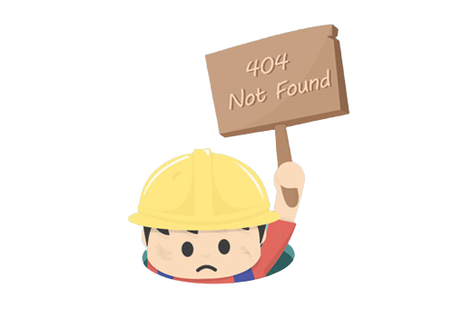

<ion-header>
  <ion-toolbar>
    <ion-title>ERROR</ion-title>
    <ion-buttons slot="start">
      <ion-back-button defaultHref="home"></ion-back-button>
    </ion-buttons>
  </ion-toolbar>
</ion-header>

<ion-content>
<h1>PAGINA NO ENCONTRADA..</h1>

</ion-content>
